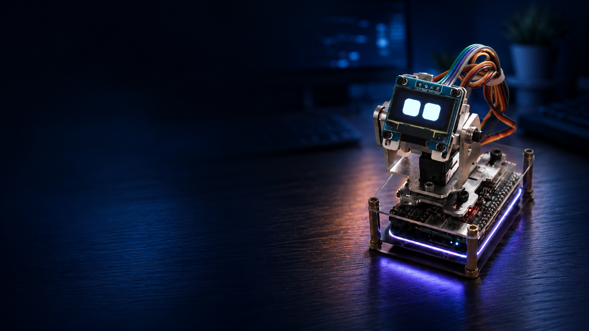

01 · Voice Input
语音输入
INMP441→I2S→本地唤醒→Opus 编码→WebSocket→云端
进入聆听状态后，设备将 Opus 音频流上传。云端完成语音识别、对话理解、回复策略、主动交互判断和个性化记忆调用。
Hardware Integration
Moqi 使用第三方机器人本体。项目负责云端策略、结构化协议、能力映射和三端联调；设备固件负责底层音频、显示与舵机执行。
主控为 ESP32-S3 N16R8，其中 N16R8 表示 16MB Flash 和 8MB PSRAM，为本地唤醒、音频编解码、显示、动作和网络通信提供设备侧基础。

| 模块 | 型号或规格 | 作用 |
|---|---|---|
| 主控 | ESP32-S3 N16R8 | 负责本地唤醒、音频编解码、显示、动作和网络通信 |
| 麦克风 | INMP441 数字麦克风 | 采集用户语音 |
| 音频输出 | MAX98357A 数字功放与扬声器 | 播放云端返回的 TTS 音频 |
| 屏幕 | SSD1306 128×64 OLED | 显示交互状态、表情和短字幕 |
| 动作模块 | 水平与垂直两个舵机 | 完成转头、抬头、低头、点头和摇头 |
| 本地交互 | BOOT、音量按键 | 完成配网、按键操作和音量调节 |
| 网络 | Wi-Fi 模块 | 与云端保持 WebSocket 长连接 |
云端只下发结构化的高层意图，设备固件完成具体执行。语音、屏幕和动作共享同一套设备状态与异常降级逻辑。
进入聆听状态后，设备将 Opus 音频流上传。云端完成语音识别、对话理解、回复策略、主动交互判断和个性化记忆调用。
设备接收云端音频流后完成解码和缓冲，再通过数字功放与扬声器播放。
云端下发聆听、思考、说话、表情和字幕等指令，固件调用已有 SSD1306 显示接口完成呈现。
云端选择点头、摇头或抬头等动作意图；角度、速度、轨迹、机械限位和动作回中由第三方固件动作库负责。
本项目负责场景与动作意图映射、结构化协议、状态约束和三端联调，不涉及舵机轨迹、动作幅度、机械结构或底层 PWM 控制设计。
硬件执行前先完成确定性校验。无法解析、状态不匹配或已经过期的指令不会进入动作与显示层。
只接收规定结构的机器人指令。
检查必填字段、类型和取值范围。
只允许调用设备已支持的动作。
结合待机、聆听、说话等状态判断能否执行。
拦截超时、重复或失去语境的指令。
提示用户检查设备，保留控制中心或文字入口。
降级为字幕、表情和轻动作反馈。
保留语音与动作反馈，并在本地端提示设备状态。
停止动作输出，降级为屏幕或语音表达。
产品化阶段可增加动作执行超时、位置反馈、电流与温度反馈、故障码、手动停止入口和异常状态动作禁用。
Moqi 采用本地优先、最小必要和用户可控的设计原则。Windows 本地端先形成脱敏摘要，再向云端提供完成介入判断所需的最小上下文。
键鼠信号只保留时间窗口内的活跃次数。原始轨迹存放在本地 SQLite，云端接收的是宽泛任务类别、状态摘要和必要设备信息。